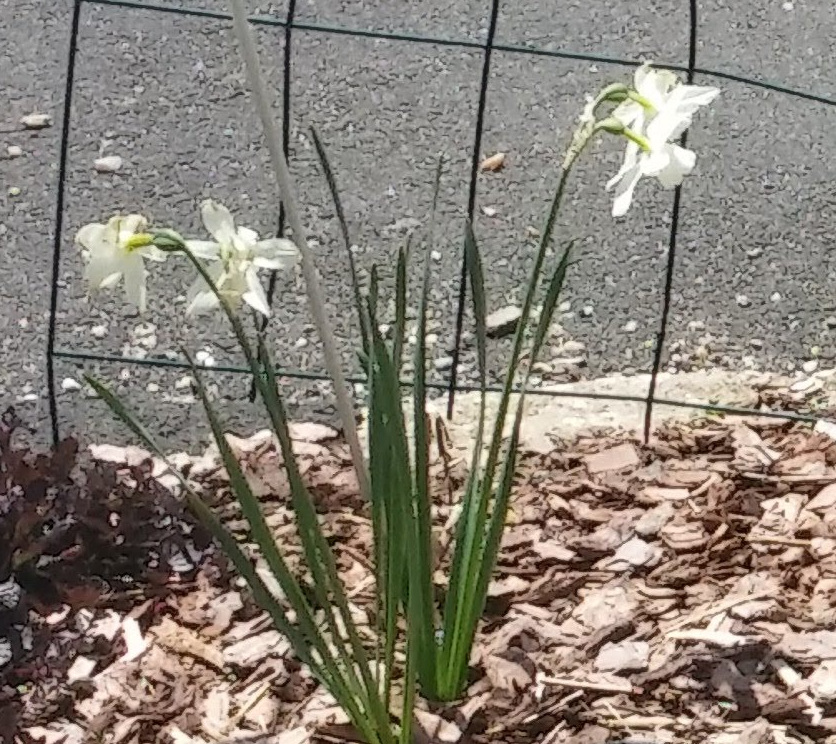

General Rose of Sharon Info
- Blooms in the midsummer
- No care needed during blooming season
- Occasionally pull out new shoots and prune after bloom time to promote fuller appearance
- General fertilizer
- Pests may include deer, sometimes nibbling on the buds and also beetles
- Pretty hardy and easy care
- Located in front and woods edge in addition to between driveways
- For more info visit Rose of Sharon info
General Tulip Info
- Bloom in the spring
- Clip all foliage after flower fades and leaves start to yellow
- No need to thin
- General fertilizer
- Pests include deer,bunnies
- Fall planted bulbs that don't always give good blooms
- Located in various gardens with several colors and sizes
- For more info visit Tulip info
General Phlox Info
- Blooms in the summer
- Clip all foliage after flower fades, deadhead and cut down occasionally
- Thin in spring and during season as flower spreads
- General fertilizer

- Pests may include deer but rare
- Tall plant with sometimes massive heads, great for bouquets
- Located in various gardens mostly in front, with several colors including pink, purple and white
- For more info visit Phlox info
General Echinacea (Conflower) Info
- Blooms in the summer
- Clip all foliage after flower fades, deadhead occasionally
- Thin in spring and during season as flower speads
- General fertilizer
- Pests include deer, rabbits and ground hog
- Perenniel,tall and spread through gardens, good to naturalize the woods edge
- Located in various gardens with colors being pink/purple, and white mostly in front
- For more info visit coneflower info
General Bellflower(Campanula) Info
- Blooms in the early summer
- Clip all foliage after flower fades, deadhead regularly
- No need to thin however they sometimes pop up in random places
- General fertilizer

- No known pests
- Perenniel,low growing
- Located in various gardens mostly in front with purple/blue blooms
- For more info visit Bellflower info
General Black-eye Susan Info
- Blooms mid Summer
- Deadhead regularly to promote new blooms
- Thin in spring and fall, these will take over the garden!
- General fertilizer

- Usually deer and ground hog likes these
- Perenniel,At the end of the flowering season,cut down to ground.
- Found everywhere in yard front and back
- For more info visit black-eyed Susan info
General Daffodil Info
- Blooms in the spring
- Clip all foliage after flower fades and leaves start to yellow
- No thinning neccesary , deadhead regularly
- General fertilizer
- 
- Pests may include deer and rabbits but rare
- several varieties in the gardens also known as Jonquil as pictured
- Located in various gardens mostly in front and side , yellow and white
- For more info visit Daffodil info
General Azalea Info
- Blooms in the spring
- Prune after flowers fade to keep the plant small
- No thinning neccesary, but important to keep plant small even if a little later season pruning is necessary
- General fertilizer
- Pests are rare
- Only 2 in the front gardens, for now..
- Located in front
- For more info visit Azalea info
Lilac Tree Info
- Blooms in the spring
- Trim back after blooms fade to keep small
- Watch for small trees to pop up, just pull them out
- General fertilizer
- No known pests
- Small bush, deciduous
- Located in front garden and between driveways
- For more info visit Lilac info
General Iris Info
- Blooms in the early summer
- Clip flower after flower fades, a pull off dryed leaves
- Thin as needed
- General fertilizer

- No known pests
- Perenniel,tall flowers
- Located in various gardens mostly in front with purple/white blooms
- For more info visit Irisinfo
A summer Image of the front garden
General Russian Sage Info
- Blooms in the midsummer
- No care needed during blooming season
- Usually I cut back after the frost but not necessary
- General fertilizer

- No known pests, the fragrant parts of the plant keep critters away
- Pretty hardy and easy care
- Located in front gardens , but don't be surprised if it is in other gardens!
- For more info visit Russion Sage info
This front garden gets very full with black-eyed-susan and phlox especially! It is ok to pull them out by the roots to thin either of them especially if they are overtaking other flowers and stifling their growth. Occasionally some annuals will help with color such as zinnia, impatience and snapdragon.
This is the garden in the front of the house, a spring image

General Mini Rose Info
- Blooms in the early summer
- Deadhead regularly
- No thinning necessay
- General fertilizer
- Pests may include deer and bugs, treat with garden pest spray
- Don't always do well and sometimes don't come back
- Located in various gardens with several colors and size of plants
- For more info visit Mini Rose info
General Mums Info
- Blooms in the late summer
- Deadhead as needed
- Thin as needed, usually very little
- General fertilizer

- Pests may include deer and bugs, treat with garden pest spray
- Cut all the way back once done blooming
- Also trim back to 6in. in early June to promote increase blooms
- Located in various gardens with several colors
- For more info visit Mum info